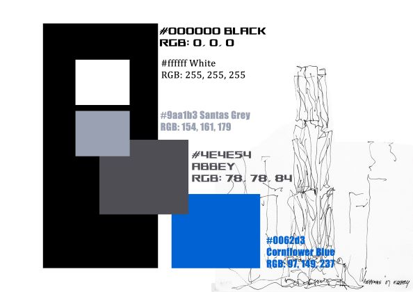
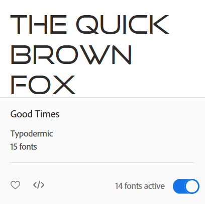
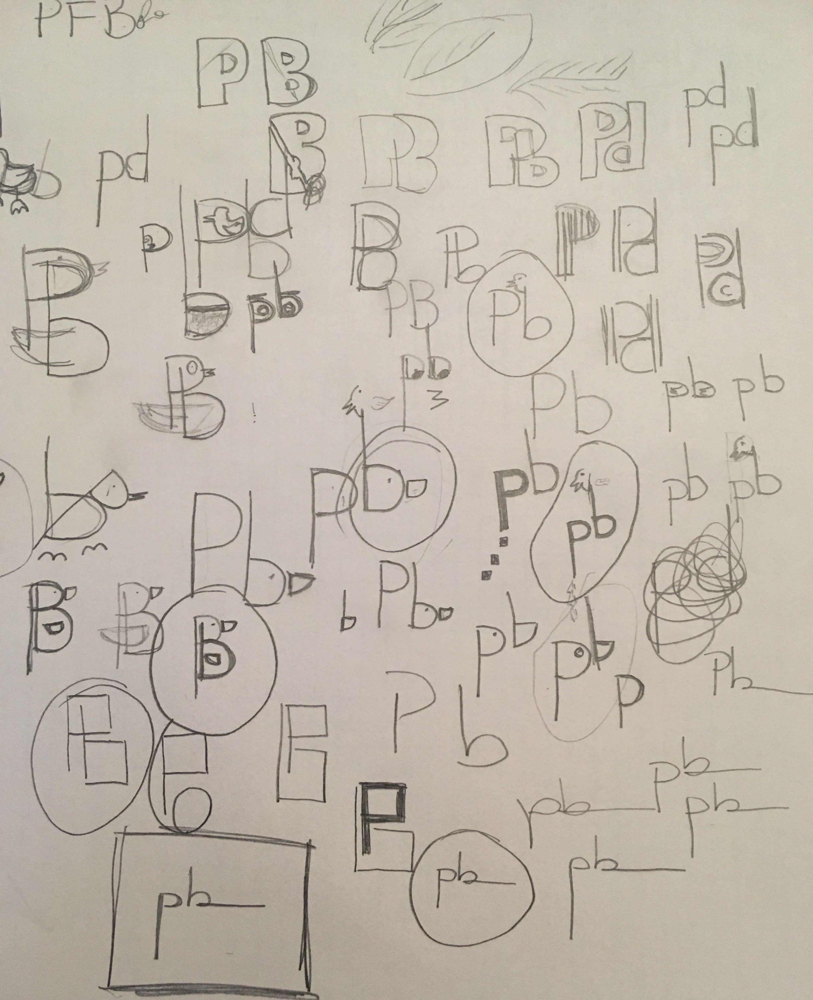
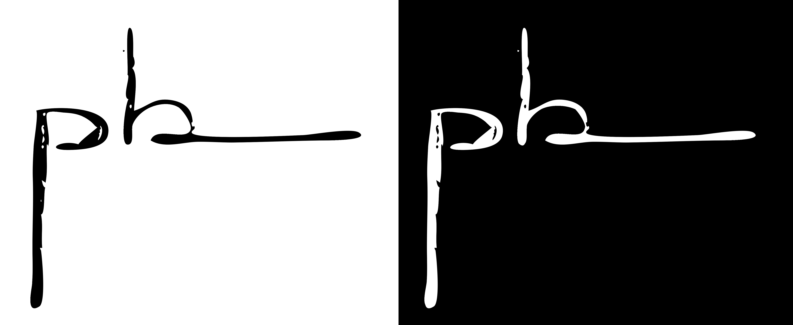

COLORS
Deconstructivism colours often reflect materials, shades of grey from steel and iron in contrast to black, white and blues from glasses and windows.
#000000 Black RGB: 0, 0, 0
#ffffff White RGB: 255, 255, 255
Plain black and white help to add contrast to shapes and immediately attract the human eye to sharp, shocking curves and cuts.
Both #9aa1b3 Santas Grey RGB: 154, 161, 179 and #4e4e54 Abbey RGB: 78, 78, 84, represent the greys characteristics of the strong presence of iron and stainless steel on these constructions, being used on this page on replacement of black, in order to soften the overall design.
#0062d3 Cornflower Blue RGB: 97, 149, 237, seen on the "about" button menu, represents the glasses and windows, commonly twisted on new, different forms, perplexing even more our eyes, not easily accepting curves on this material.

TYPOGRAPHY
Good Times, regular, from adobe cloud fonts database was
chosen for main titles because if brings a lot of curves and lines seen on buildings and constructions.
Lucida Sans Unicode was used for regular text, better user interface on all devices.

Good Times
SKETCHES
Looking for my portfolio future logo, I played with my initials, PB, and tried to add some personality with curves, ducks, yes, ducks, and over layers. Although a fun process, plus infinite possibilities, I have decided to go for something simple and clean, which defines me, and also depending on the font and boldness used could become perfectly deconstructive.
The ones I liked the result have a circle around it, the final one, square.

Sketches

Logo